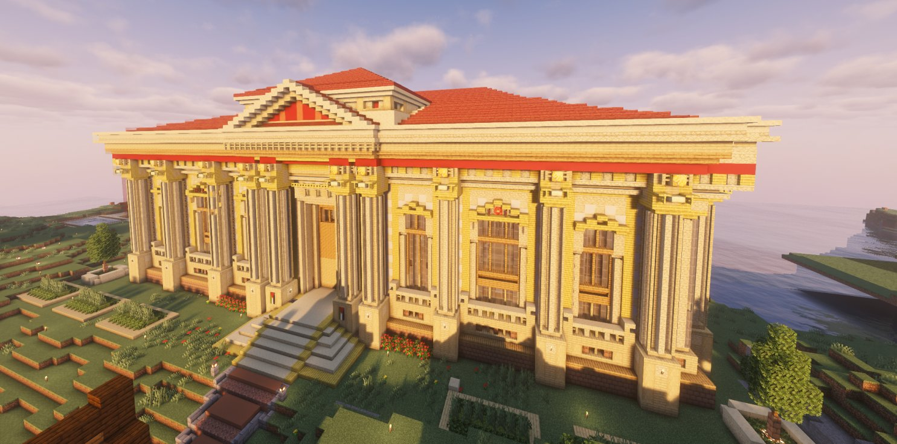

Accord cadre État/Banque : les dessous d'un contrat historique
Le Karmine Déchaîné est en possession d'un document exclusif. Un accord cadre a été signé entre l'État et la Horace Bank — 100 000 KCoins par semaine, salaire minimum, soutien aux entreprises. Décryptage.

Le Karmine Déchaîné est en possession d'un document exclusif qui va faire parler. Un accord cadre économique et gouvernemental a été signé entre l'État, représenté par le président Mr Jackson, et la Horace Bank, représentée par Zackk et Sohalia. Un contrat aux implications majeures pour l'ensemble des citoyens de Karminéa.
Article 1 — 100 000 KCoins par semaine pour la banque
L'article 1 est sans doute le plus spectaculaire. Le président Jackson s'engage à verser chaque semaine une subvention fixe de 100 000 KCoins directement sur les comptes de la Horace Bank — de manière automatique et prioritaire. Un engagement financier colossal qui soulève une question légitime : dans un territoire où les citoyens peinent à boucler leurs fins de semaine, cette priorité accordée à la banque est-elle vraiment justifiée ?
Article 2 — Un salaire minimum enfin fixé
Bonne nouvelle pour les travailleurs : l'article 2 officialise l'existence d'un salaire minimum légal fixé à 500 KCoins par jour, soit 2 500 KCoins par semaine sur cinq jours ouvrés. Une avancée sociale notable, attendue depuis longtemps par de nombreux habitants du territoire.
Article 3 — 25 000 KCoins pour les petites entreprises
L'article 3 représente une véritable opportunité pour les entrepreneurs. La Horace Bank s'engage à allouer chaque semaine une enveloppe de 25 000 KCoins exclusivement dédiée à l'investissement dans les petites entreprises prometteuses. Commerçants, prenez note — la banque a des fonds à investir.
Article 4 — Un pacte de non-agression fiscale
L'État s'engage formellement à ne jamais modifier unilatéralement les taxes liées aux activités bancaires. Tout changement fiscal devra faire l'objet d'un accord mutuel et écrit. En clair : la banque obtient une garantie de stabilité fiscale. Un privilège considérable qui, replacé dans le contexte des accusations d'Alan Leonhart sur les liens entre les élites et le pouvoir, ne manquera pas d'alimenter le débat public.
Article 5 — Le tribunal comme arbitre
En cas de non-respect du contrat, le tribunal du pays pourra être saisi pour rupture de contrat et gel des avoirs. D'autant plus que Mr Carl a annoncé lors du dernier conseil que la construction du tribunal est imminente.
L'analyse du Karmine Déchaîné
Ce contrat apporte une stabilité institutionnelle bienvenue et des garanties concrètes pour les travailleurs. Mais il pose aussi des questions : la subvention de 100 000 KCoins est-elle assortie d'obligations de résultats ? Le pacte de non-agression fiscale ne crée-t-il pas un déséquilibre entre l'État et une institution privée ? Le Karmine Déchaîné a contacté les parties concernées et vous promet une interview dans une prochaine édition.
"Un contrat ne vaut que par ceux qui le respectent. Nous serons là pour vérifier."
— La Rédaction